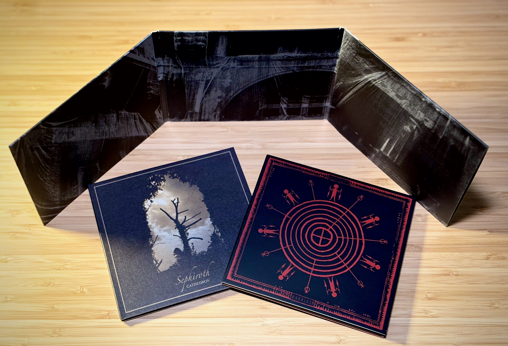

Hypogeum mixtape #2
Egy újabb dark ambient összeállítás, hogy ezen a hétvégén se maradjatok hallgatnivaló nélkül. Benne többek között Llyn Y Cwn, Randall Collier-Ford, Mount Shrine és mások.
27. heti release-ek
Infinity beckons the stars to black by insectarium
„Inspired by H.P. Lovecraft's "cosmicism."”
Translucent Communion by Vestigial
A 2008-as klasszikus album újrakiadása. Korlátozott példányszámú CD.
Descending Vastness by Vestigial
…és itt az új album is tőle.
Merger by Silent Universe
Lustmord CD
Lustmordot nyugodtan lehet legendának nevezni, a 2024-es Much Unseen Is Also Here albuma pedig minden pillanatában méltó hozzá. Az előző mixtape-en is kapott helyet, és a nemsokára érkező másodikon is fog.
“My music is not meant to be explained - only listened to as a means of exposing the sheer insignificance of our primitive thoughts and actions within the vast scale of the cosmos - a scale which we as a species are ill equipped to comprehend.”

Kult of O 2025-06-24
Oneirich is új mixtape-pel örvendeztet meg minket, benne Holotrop, Seesar és sokan mások.
Nacht 2025-06-20
Nacht, újra.
Echoes of the Hollow Earth
Új Cryo Chamber release: Echoes of the Hollow Earth.
Vestigial live at Phobos 2024
Hypogeum Mixtape #1
Hallgatnivaló a hétvégére: az ígérteken kívül még Desiderii Marginis, Beckahesten és mások, közel egy órában.
CD-k
Cyclic Law-tól érkezett: Kammarheit, Ulvtharm, Sephiroth CD-k. Nemsokára jön egy mixtape, benne lesz egy-egy track, stay tuned vagy mi.

Phobos fesztivál 2025.
Még időben szólok: október 18-án Phobos fesztivál Wuppertalban.
Nacht 2025-06-07
Kezdjük a közös dark ambient aktivitást egy mixtape-pel: a Winter Light 'Nacht' műsorában Joel Gilardini, Maeror Tri, Caldon Glover, Vidna Obmana, Violent Grief és mások hallhatók.